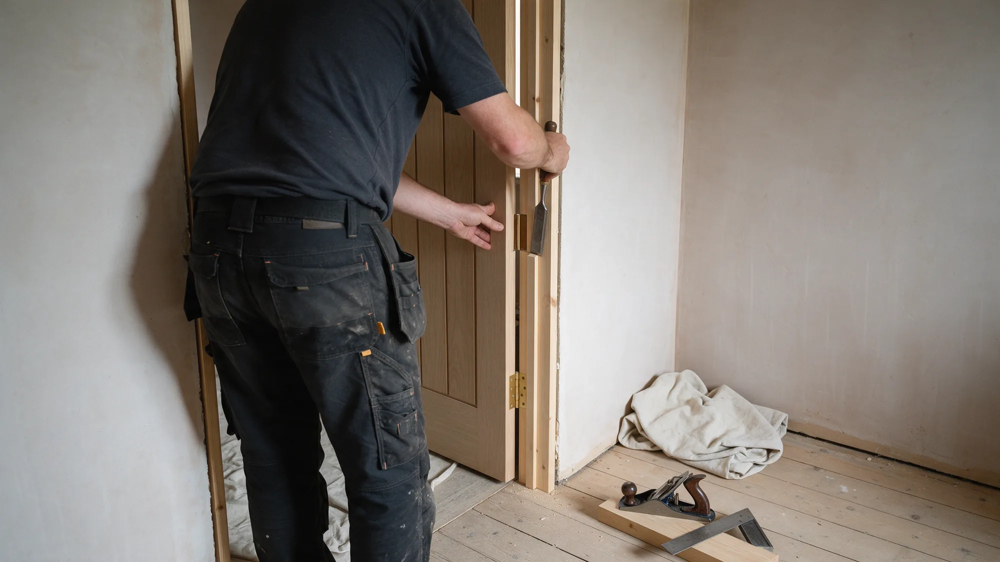
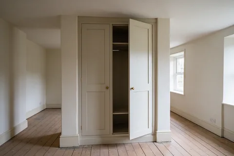
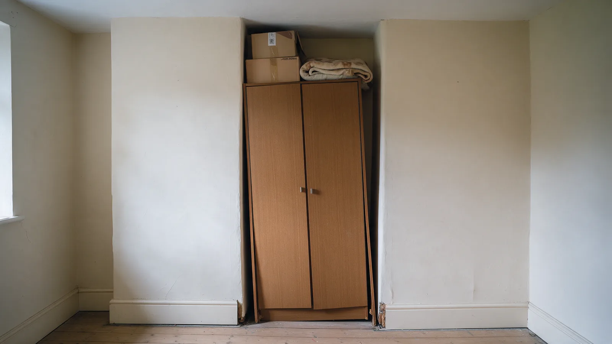
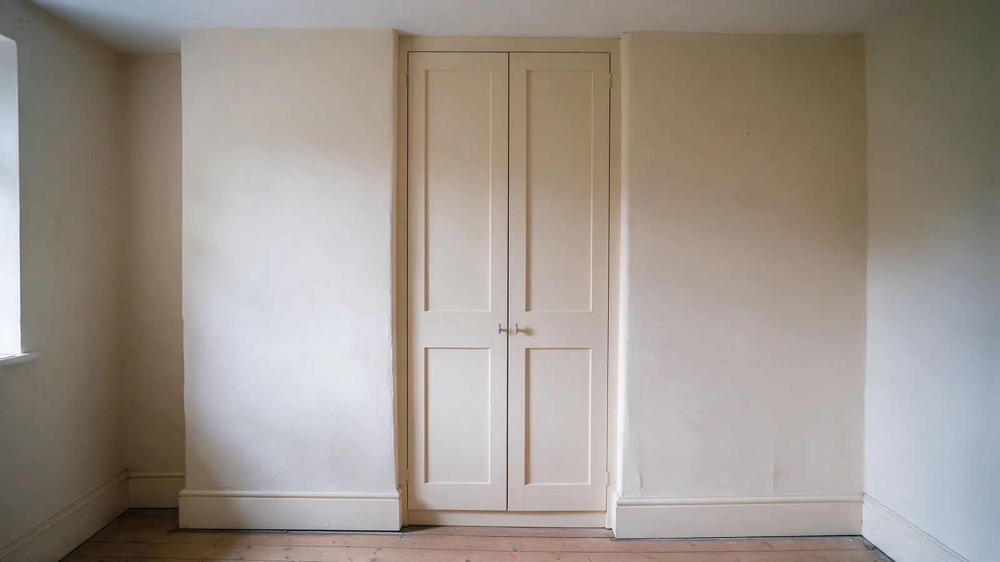
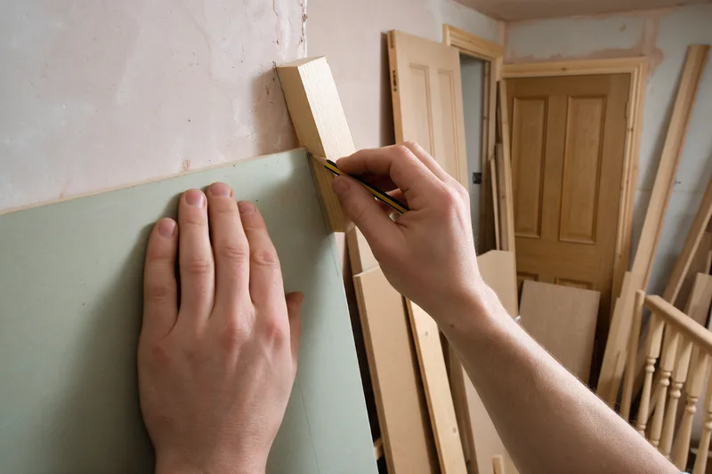
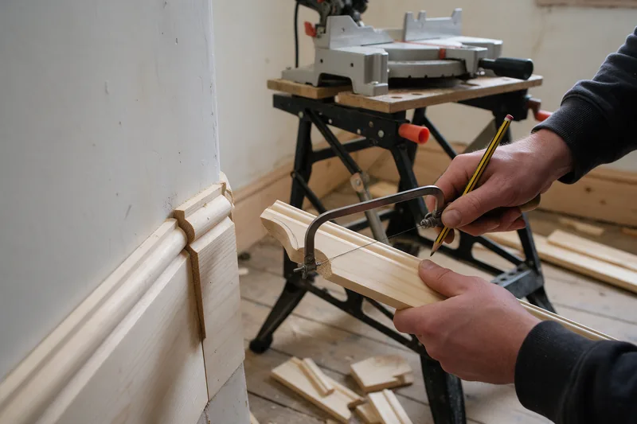
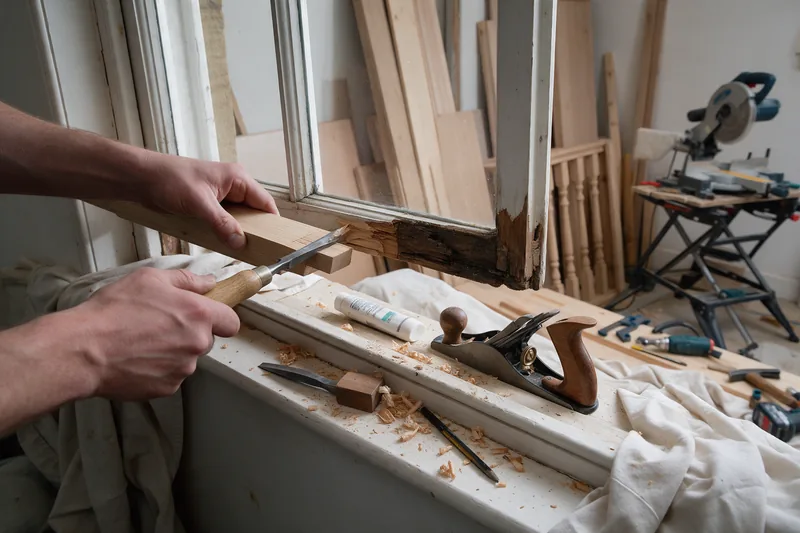
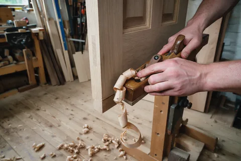

Generated photoJoinery and carpentry · Calderdale
Nothing here is square.
We work with that.
Internal doors and fire doors, staircases and banisters, fitted wardrobes, skirting and architrave, timber window repairs and garden joinery. Measured in three places, scribed to the wall you have, and still shutting properly in August.
Materials
Four timbers, and what each one is good for.
The question we get asked most is whether we work with oak. The honest answer is that the timber is chosen for the job, and these four cover nearly all of it.
Redwood and whitewood
What most skirting, architrave, studwork and carcassing is. Cheap, light, easy to work and it takes paint well. It moves with the weather more than anything else here, and a knot will bleed through paint unless it is sealed first.
MDF and plywood
Dead flat, no grain, no movement and no knots, which is why painted doors, wardrobe carcasses and panelling are mostly made of it. It hates water, the cut edges drink paint, and it has no strength along an unsupported span, so the framing behind it matters.
Oak
Yes, we work with it. Hard, heavy, open grained and lovely under oil or wax. It blunts tools faster, it wants screw holes drilling rather than driving, and its own tannin will stain if the wrong fixings go anywhere near it, so it is stainless or nothing.
Walnut and the dark ones
For the things you touch and look at: a handrail, a worktop, a stair nosing, a run of shelves. Costs more, so it tends to be used where it shows and a cheaper timber does the hidden work behind it. Dark timber shows dust and fingerprints, which is worth knowing before you choose it.
Board faces drawn in the browser rather than photographed, so nothing here is pretending to be a product you can order.
What we do
Six kinds of job.
 Generated photo
Generated photoInternal doors and fire doors
Hung to the opening you have rather than the one the door was made for. Recesses cut by hand, gaps even all the way round, and it still shuts in August.
 Generated photo
Generated photoStaircases and banisters
New spindles and handrails, newel posts, and the creaks taken out of a flight that has been annoying somebody for years. Fitted so the whole thing feels solid under your hand.

Generated photoFitted wardrobes and storage
Built into the alcove you have, out of square walls and all. Scribed tight to the plaster, up to the ceiling, with no gap on top collecting boxes.
 Generated photo
Generated photoSkirting, architrave and flooring prep
Long runs scribed into corners rather than mitred and filled, architrave tight at the head, and floors made flat and quiet before anybody lays anything on them.
Sash and timber window repairs
Rotten sections spliced out and new timber let in, sash cords and weights sorted, and the whole thing working again without a plastic window going in.
 Generated photo
Generated photoDecking and garden joinery
Decks, gates, stores and screens, framed properly and set so water runs off rather than sits. Outside timber either drains or it rots, and the framing decides which.
How it works
Four steps, and a tape in three places.
You tell us the job
A call, the chat box or the form. Which rooms, what is there now and roughly what you want instead. Photographs help more than measurements, because we would rather see the opening than be told a number.
Somebody comes and measures
Top, middle and bottom of every opening, a level on the floor and the walls, and a look at what is behind the plaster where it matters. Twenty minutes to half an hour, and it is the part that decides whether the job goes right.
You get it in writing
What is being made, what timber it is, what is being fitted, what is coming out and going away, and what is not included. Separate lines, so you can hold it against anybody else's.
We make it and fit it
Cutting outside or in the garage where we can, sheets down inside, and the floor swept at the end of each day rather than the end of the job Sample.


Illustrative, not a real job. Both pictures were generated for this demo from the same alcove, once with a bought wardrobe pushed into it and once built in, so the window, the chimney breast and the floorboards are the same in each.
Before and after
The gap down the side is the whole story.
Drag the slider. On the left, a wardrobe that was square, standing in an alcove that was not. It had to be set to the narrowest point, so there is daylight down one side, a wedge of dead space behind it and a shelf on top that was collecting boxes within a month.
On the right the carcass is still square, because a box with doors in it has to be. What changed is that the difference between square and the actual wall now lives in a tapered filler each side and a panel on top, every one of them marked off the wall and cut to follow it. You see one flat front, floor to ceiling. That is the whole trick, and it is why a fitted job costs more than a flat pack and looks like it belongs to the house.
See the rest of the workOur work
Sample jobs.
16 jobs
 Generated photoRecess cut by handHebden Bridge · Sample
Generated photoRecess cut by handHebden Bridge · Sample Generated photoA fire door into an old liningTodmorden · Sample
Generated photoA fire door into an old liningTodmorden · Sample Generated photoEasing one that had swollenMytholmroyd · Sample
Generated photoEasing one that had swollenMytholmroyd · Sample Generated photoNew spindles going inRastrick · Sample
Generated photoNew spindles going inRastrick · Sample Generated photoHandrail into the newelRipponden · Sample
Generated photoHandrail into the newelRipponden · Sample Generated photoAn alcove that was not squareHebden Bridge · Sample
Generated photoAn alcove that was not squareHebden Bridge · Sample Generated photoUnder the stairs, used at lastTodmorden · Sample
Generated photoUnder the stairs, used at lastTodmorden · Sample
Generated photoScribed to a wall that bowsRipponden · Sample
Generated photoScribed, not mitred and filledRastrick · Sample Generated photoTight at the headMytholmroyd · Sample
Generated photoTight at the headMytholmroyd · Sample Generated photoA floor made flat and quietHebden Bridge · Sample
Generated photoA floor made flat and quietHebden Bridge · Sample
Generated photoA sill spliced rather than skippedTodmorden · Sample Generated photoCords and weights back to workHebden Bridge · Sample
Generated photoCords and weights back to workHebden Bridge · Sample Generated photoFramed so the water runs offRipponden · Sample
Generated photoFramed so the water runs offRipponden · Sample Generated photoA gate that clears the flagsRastrick · Sample
Generated photoA gate that clears the flagsRastrick · SampleEvery job here is a made up sample with a generated picture. Tap one to see it bigger.
Where we work
Based in Calderdale.
Based in Calderdale Sample. These are the towns we cover most. Coverage is a sample for this demo. A bit outside it? Ask anyway, it depends what else is on that week.
 Generated photo
Generated photoWhat people say
Sample reviews.
Sample review
Three people told me a fitted wardrobe would not work in our bedroom because the wall bows. This lot turned up with a tape, measured the alcove in three places, showed me where the scribe would take up the difference and then built it. You cannot see a gap anywhere.
Dean, Hebden Bridge
Sample review
Six internal doors in a day and a half, and the thing I noticed was the gaps. Same all the way round every one of them. The old doors had been hung by somebody who clearly did not care, and I had stopped seeing it until these went on.
Priya, Rastrick
Sample review
Had two quotes for new plastic windows and then rang a joiner instead. Turned out about a foot of the bottom rail was gone and the rest was sound. Spliced in, cords replaced, both sashes slide properly again. Cost nothing like the window.
Mal, Todmorden
Sample review
The stairs had creaked since we moved in. They went underneath, knocked the old wedges out, cleaned them up and glued them back in, and put blocks in where there were none. Quiet now. No new staircase needed, which is what I had been told I needed.
Jo, Mytholmroyd
Made up for this demo. Grainhurst does not exist, so neither do its customers.
Questions
What people ask us first.
Can you make built in wardrobes to fit an alcove?
That is most of what fitted wardrobes are. The alcove either side of a chimney breast is the classic one, and in an older stone house none of it is square: the walls lean, they bow in the middle, and the back wall is not a true right angle to either side.
The way round it is that the carcass is built square, because doors and drawers only work in a square box, and then a tapered filler each side and a panel on top are scribed to the actual wall. Marked off the wall, cut to follow it, bows and all. From the room you see one flat front, floor to ceiling, with no gap down the side and nothing collecting dust on top.
Do you hang new internal doors?
Yes, and it is one of the jobs that makes the biggest difference for what it costs. A new door on its own is not much. A new door hung properly, with the recesses cut by hand, even gaps all the way round, the handle at a sensible height and the latch lining up with the keep, is a different thing entirely.
Worth knowing before you buy: doors come in standard sizes and old openings are not standard, so a door often needs taking down a little on the width or the height. There is a limit to how much can come off, especially on a hollow door, so it is worth us seeing the opening before you order six of anything.
Can you repair a creaky staircase?
Usually, and usually without a new staircase. A creak is timber rubbing against timber, so the job is finding which two pieces are moving. On a traditional stair the tread sits in a housing in the string, held by tapered wedges driven in from underneath, with small glue blocks in the corner where the tread meets the riser.
Over a century the glue dries out, the wedges work loose and half the blocks are missing. If we can get underneath, the wedges come out, get cleaned up and go back in with fresh glue, and new blocks go in where they are missing. If it is boarded in or plastered underneath, we work from the top instead, which is more limited but still gets most of it. What nobody should do is drive a nail down through the tread and hope.
Do you work with oak?
Yes. Doors, handrails, stair parts, worktops, shelves, windows and the odd bit of furniture. It is lovely to look at and it behaves differently to softwood, which changes the job rather than the price list.
Oak is hard, so every screw hole gets drilled, and it blunts a blade faster. It is heavy, so a solid oak door wants three hinges rather than two and a sound frame to hang off. Its own tannin reacts with steel, so fixings are stainless or they stain the timber black round every screw. And it moves a fair bit with the weather, which is why an oak door is left a shade generous on the gaps and finished on all six faces rather than five.
Can you fit a door I have bought?
Yes, happily. Plenty of people pick a door they like and want it hung properly, and that is a sensible way round it.
Two things worth saying first. Check the size against the opening before it is delivered, because taking a lot off a door is not always possible, and on a hollow core door the solid timber round the edge is only so deep. And if it is a fire door, it has to be the right door for that opening with the ironmongery the maker's instructions call for, so send us a photograph of the door and the frame before you buy rather than after.
What is the difference between a joiner and a carpenter?
In Britain the rough split is that a joiner makes the timber things, usually off site with machines and a bench, and a carpenter fits them in the house. Doors, stairs, wardrobes, windows and frames are joinery. Hanging them, fixing floors, studwork and roof timbers is carpentry.
Most firms this size do both, which is why the sign says joiner and carpenter. What matters when you ring somebody is whether they do the particular job, not which word they use.
Do you take the old stuff away?
Yes, and it gets said on the quote rather than left as a surprise at the end. Old doors, old skirting, a stripped out wardrobe, offcuts and the bags of sawdust all go with us.
The one thing worth a word in advance is a big clear out, for example a fitted bedroom coming out or a floor being lifted. That is a bigger load than a normal day's waste and it goes on the quote as its own line so you can see what it is.
How much mess is there?
More dust than a painting job and less than a plastering one. Cutting timber indoors makes sawdust wherever it happens, so the mitre saw goes outside or in the garage where it can, sheets go down, and doors to the rest of the house get shut rather than left open.
Floors get swept and vacuumed at the end of each day rather than at the end of the job, and anything we have lifted gets put back. If somebody in the house has a problem with dust, say so when you ring and the cutting stays outside completely.
General guidance written for this demo from trade knowledge, not advice on your house.
Advice
Worth reading first.
Fitted or freestanding wardrobes
What you actually gain by building it in, what you give up, and when a bought wardrobe is the sensible answer.

Generated photoWhy internal doors stick and what fixes it
Four causes, and only one of them is the door. How to tell which one you have before anybody takes a plane to it.
Timber windows: repair before you replace
How to find out how much of the window is actually gone, and why the rotten bit is usually smaller than it looks.
About this demo
What this demo shows.
Grainhurst is not a real firm. The site is here to show a joiner and carpenter what Clockwork AI builds, in six parts.
No prices here. What it would cost for your firm is a conversation, not a web page. The Clockwork number is in the bar at the top.
Shall somebody come and measure it?
Tell us the job and your postcode and we will come and put a tape across it properly before anybody quotes you.